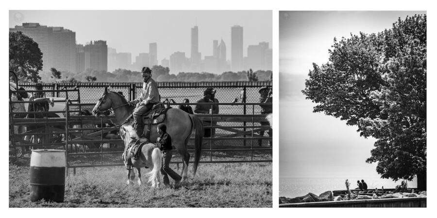

Eli Williamson: Fellowship
The Evanston Art Center (EAC) is excited to welcome the public to our upcoming exhibition by Eli Williamson, Fellowship. The exhibition will be on display from January 24 – March 1, 2026.
In Fellowship, South Side Chicago native and photo essayist Williamson visually explores the sacred spaces where Black men and boys learn, grow, and heal in each other’s presence. Through imagery, the exhibition asks: Where are the rituals that teach manhood? Fellowship is an installment of Williamson’s ongoing series, The Four Virtues, a four-part monograph that cements the virtue of Black men and boys through images and writing.
Fellowship will be exhibited in the Lobby Gallery of the Art Center. The opening reception is free and open to the public. This exhibition is partially funded by the Illinois Arts Council, a state agency, and the EAC’s general membership.
Evanston Art Center, a nonprofit 501 (c)(3) organization, is dedicated to fostering the appreciation and expression of the arts among diverse audiences. The Art Center offers extensive and innovative instruction in broad areas of artistic endeavor through classes, exhibitions, interactive arts activities, and community outreach initiatives.